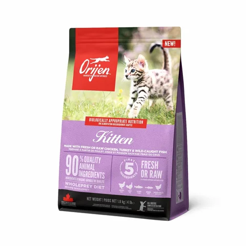

ORIJEN
ORIJEN Kitten
幼貓乾飼料・無穀・1.8kg 袋
持平歷史低價比 30 天前便宜 16.1%
90 天價格水準：偏低（最低 €18.88/kg ～ 最高 €22.49/kg，依過去 19 天每日最低價）
商店報價（依每單位價排序）
| 店家 | 規格 | 總價 | 每單位價 | 條件 | 購買 |
|---|---|---|---|---|---|
| Tradeinn/Bricoinn | Kitten1.8kg Netherlands/EUR selected one-time | €33.99 | €18.88/kg | NL運費未知，未加車；不宣稱含運最低 2026-11-27 live browser：Kitten 1.8kg €33.99（建議售價 €45.10，-25%），價格不變，有貨，仍為最佳價；預計送達 12 月 3–7 日。寄荷蘭運費仍未核實（須加車後才在購物車顯示，未加車）。頁面黑五碼 BF15（最高 -15%），未測試，不計入。 | 前往 → |
| Medpets | 1x1.8kg | €36.40 | €20.22/kg | 最低訂單 €14.95 需訂閱定期配送 2026-11-27 live browser：Kitten 1.8kg €38.70 一次價／Herhaal €36.40（-6%），價格不變，有貨；免運 €69。 | 前往 → |
| Petfooddiscount.nl | 1x1.8kg | €36.95 | €20.53/kg | 運費 €4.95 2026-11-27 live browser：Kitten 1.8kg €36.95（建議價 €40.49），價格不變，有貨；免運 €49。 | 前往 → |
| Zoomalia.nl | 3x1.8kg | €109.47 | €20.27/kg | 滿 €49 免運 沿用 2026-11-07 報價 2026-11-07 WebFetch 讀取（curl 403） | 前往 → |
| Zoomalia.nl | 1x1.8kg | €37.99 | €21.11/kg | 滿 €49 免運 沿用 2026-11-07 報價 2026-11-07 WebFetch 讀取（curl 403） | 前往 → |
| Brekz | 1x1.8kg | €38.69 | €21.49/kg | 運費未知 沿用 2026-11-25 報價 2026-11-25 live browser：Brekz 搜尋 ORIJEN 核實：Kitten 1.8kg €38.69 有貨，與 Petgamma €38.69 同價；免運門檻等未在搜尋頁顯示，未核實。Brekz ORIJEN 今日首次核實（此前連續多日 Cloudflare 擋，今日換環境後清除）。 | 前往 → |
| Petgamma | 1x1.8kg | €38.69 | €21.49/kg | 運費未知 沿用 2026-11-25 報價 2026-11-25 live browser：1.8kg €38.69 有貨，與 2026-11-24 相同，無變化。滿 €50 免運，23:59 前下單明日到貨，30 天免費退貨；頁面未見黑五促銷。初次開啟被 Cloudflare 封鎖（Ray ID a5ff6a1128fcc6e3），經 bot 挑戰專員換環境後核實。 | 前往 → |
| Amazon.nl（賣家 Plein） | 1x1.8kg | €35.06 | €19.48/kg | Amazon 出售／出貨免運 經 CashbackXL 返現 €2.32 沿用 2026-11-11 報價 未核實 2026-11-11 重新抓取（頁面meta價）；較上次 11-07：37.07→37.38；運費／促銷欄沿用上次未重核；Amazon 賣家／庫存文字解析不完整，標部分核實，不計入新低 | 前往 → |
| bestpetfoods | 1x1.8kg | €37.66 | €20.92/kg | €50 起免運，否則 €5.95；定期配送 95 折不計返現 經 YesCashback 返現 €1.29 沿用 2026-11-15 報價 未核實 2026-11-15 curl 重抓頁面，確認頁面仍含上次價格字串（未逐變體結構化解析、庫存／運費／促銷沿用 11-13）；價格視為同 11-13；返現率沿用（ShopBuddies zooplus 1.33%/新客8%、Medpets 4%、Brekz 3.5%、YesCashback bestpetfoods 4% 今日重查未變；CashbackXL 頁為 JS 未能讀取＝未確認） | 前往 → |
| Zoofera | 1x1.8kg | €38.01 | €21.12/kg | 運費見 Zoofera 沿用 2026-11-15 報價 未核實 2026-11-15 curl 重抓頁面，確認頁面仍含上次價格字串（未逐變體結構化解析、庫存／運費／促銷沿用 11-13）；價格視為同 11-13；返現率沿用（ShopBuddies zooplus 1.33%/新客8%、Medpets 4%、Brekz 3.5%、YesCashback bestpetfoods 4% 今日重查未變；CashbackXL 頁為 JS 未能讀取＝未確認） | 前往 → |
| Huisdieren.nl | 1x1.8kg | €38.25 | €21.25/kg | 運費 €6.95 沿用 2026-11-15 報價 缺貨 2026-11-15 curl 重抓頁面，確認頁面仍含上次價格字串（未逐變體結構化解析、庫存／運費／促銷沿用 11-13）；價格視為同 11-13；返現率沿用（ShopBuddies zooplus 1.33%/新客8%、Medpets 4%、Brekz 3.5%、YesCashback bestpetfoods 4% 今日重查未變；CashbackXL 頁為 JS 未能讀取＝未確認） | 前往 → |
| Pharmapets | 1x1.8kg | €38.35 | €21.31/kg | 滿 €39 免運・運費 €3.99 沿用 2026-11-11 報價 缺貨 2026-11-11 WebFetch：Niet op voorraad，€38.35；缺貨不計新低 | 前往 → |
| Pets Place | 1x1.8kg | €38.87 | €21.59/kg | 滿 €39 免運 經 ShopBuddies 返現 €1.62 沿用 2026-11-15 報價 未核實 2026-11-15 curl 重抓頁面，確認頁面仍含上次價格字串（未逐變體結構化解析、庫存／運費／促銷沿用 11-13）；價格視為同 11-13；返現率沿用（ShopBuddies zooplus 1.33%/新客8%、Medpets 4%、Brekz 3.5%、YesCashback bestpetfoods 4% 今日重查未變；CashbackXL 頁為 JS 未能讀取＝未確認） | 前往 → |
| PetShop24 | 1x1.8kg | €39.95 | €22.19/kg | 運費 €5.75 沿用 2026-11-15 報價 未核實 2026-11-15 curl 重抓頁面，確認頁面仍含上次價格字串（未逐變體結構化解析、庫存／運費／促銷沿用 11-13）；價格視為同 11-13；返現率沿用（ShopBuddies zooplus 1.33%/新客8%、Medpets 4%、Brekz 3.5%、YesCashback bestpetfoods 4% 今日重查未變；CashbackXL 頁為 JS 未能讀取＝未確認） | 前往 → |
| FamilyVet.es | Kitten 1.8kg | €30.55 | €30.55/袋 | 運費未知 沿用 2026-11-07 報價 缺貨 精確商品頁現價確認；庫存/含稅文字/NL官方配送均未核實，不能當可寄NL新低 | 前往 → |